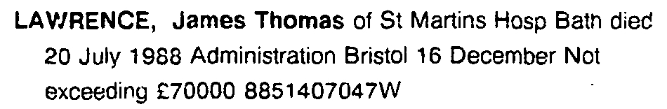
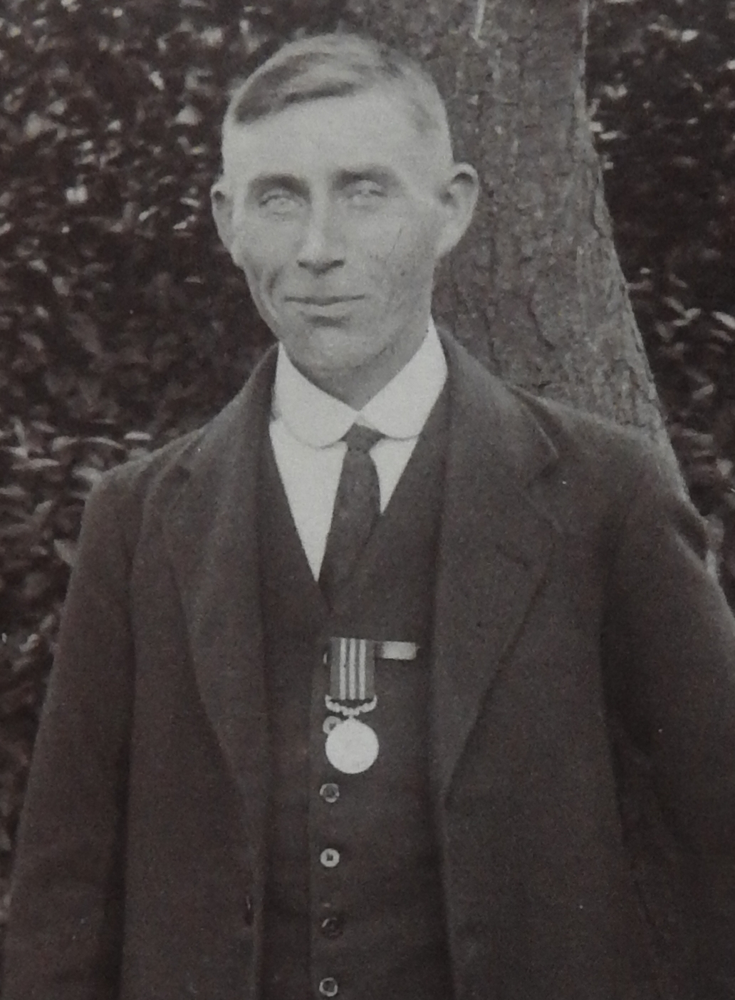
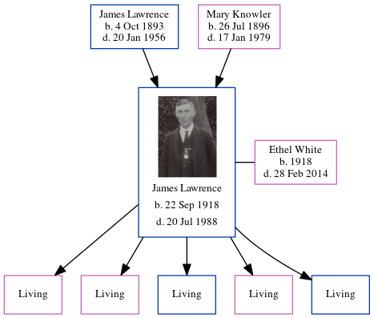

James Thomas Lawrence 1918 - 1988
[ Home ] | [ Calendar ] | [ Surnames Index ] | [ Census Index ] | [ Family History ]The child of James Lawrence (a general farm worker) and Mary Knowler, James Lawrence, the first cousin once-removed on the mother's side of Nigel Horne, was born in Northbourne, Kent, England on Sep 22, 19181,2,3,4,5 and. He married Ethel White (with whom he had 5 surviving children Rosemary Joy, Patricia Eve, Hugh J, Gay Angela Lawrence and William Steven) in Eastry, Kent, England around Aug 19396. On Jun 19, 1921, he was living at Meadow Cottages, Marshside, Kent1.
He died on Jul 20, 1988 at St Martin's Hospital, Bath, Somerset, England3.
Parents
- James Thomas was born on Oct 4, 1893
- Mary Elizabeth was born on Jul 26, 1896
Citations
- 1921 Census Of England & Wales - Findmypast (was age 2 and the son of the head of the household)
- England & Wales births 1837-2006 - Findmypast
- England & Wales deaths 1837-2007 - Findmypast
- England & Wales, Birth Index: 1916-2005 Online publication - Provo, UT, USA: The Generations Network, Inc., 2008.Original data - General Register Office. England and Wales Civil Registration Indexes. London, England: General Register Office. © Crown copyright. Published by permission of the Cont
- England & Wales, Death Index: 1984-2005 Online publication - Provo, UT, USA: The Generations Network, Inc., 2007.Original data - General Register Office. England and Wales Civil Registration Indexes. London, England: General Register Office. © Crown copyright. Published by permission of the Cont
- England & Wales, Marriage Index: 1916-2005 Online publication - Provo, UT, USA: The Generations Network, Inc., 2009.Original data - General Register Office. England and Wales Civil Registration Indexes. London, England: General Register Office. © Crown copyright. Published by permission of the Cont
Media
James Thomas Probate

James Thomas Lawrence

England & Wales births 1837-2006 - BMD/B/1918/4/AZ/000715/131
England & Wales marriages 1837-2008 - BMD/M/1939/3/AO/001237/140
England & Wales deaths 1837-2007 - BMD/D/1980/1/AZ/000721/075
England & Wales deaths 1837-2007 Transcription - BMD-D-1988-7-76809722
1921 Census of England & Wales - GBC/1921/RG15/04355/0369/03
Family Tree
Generated by ged2site. Last updated on Jun 11, 2024